from datetime import date, time, datetime, timedelta
stamp = datetime(2026, 1, 15, 14, 30)
delta = timedelta(days=2, hours=3)
print(stamp)
print(stamp + delta)2026-01-15 14:30:00
2026-01-17 17:30:00Time Series Graphics for Data Analytics
Timestamp → calendar → frequency → alignment → resampling → windows → graphics
The representation must match what the observation actually measures.
A line can display either, but lag 1 has a stable duration only under a regular calendar.
from datetime import date, time, datetime, timedelta
stamp = datetime(2026, 1, 15, 14, 30)
delta = timedelta(days=2, hours=3)
print(stamp)
print(stamp + delta)2026-01-15 14:30:00
2026-01-17 17:30:00date: calendar date;time: time of day;datetime: date and time;timedelta: elapsed duration.raw_dates = pd.Series([
"2026-01-15", "15/02/2026", "March 20, 2026", "invalid"
])
parsed = pd.to_datetime(
raw_dates, format="mixed", dayfirst=True, errors="coerce"
)
pd.DataFrame({"raw": raw_dates, "parsed": parsed})| raw | parsed | |
|---|---|---|
| 0 | 2026-01-15 | 2026-01-15 |
| 1 | 15/02/2026 | 2026-02-15 |
| 2 | March 20, 2026 | 2026-03-20 |
| 3 | invalid | NaT |
errors="coerce" exposes failures as missing timestamps. It does not repair their meaning.
stamp = pd.Timestamp("2026-01-15 14:30")
print(stamp.strftime("%Y-%m-%d"))
print(stamp.strftime("%d %b %Y, %H:%M"))2026-01-15
15 Jan 2026, 14:30Formatting changes display, not the underlying temporal value.
DatetimeIndex: time as an analytical axisidx = pd.date_range("2026-01-01", periods=6, freq="D")
series = pd.Series([72, 74, 73, 77, 78, 76], index=idx, name="value")
print(type(series.index).__name__)
seriesDatetimeIndex2026-01-01 72
2026-01-02 74
2026-01-03 73
2026-01-04 77
2026-01-05 78
2026-01-06 76
Freq: D, Name: value, dtype: int64A timestamp-indexed Series supports temporal slicing, frequency logic, shifting, and resampling.
2026-01-02 74
2026-01-03 73
2026-01-04 77
2026-01-05 78
Freq: D, Name: value, dtype: int64daily = pd.Series(
np.arange(90),
index=pd.date_range("2026-01-01", periods=90, freq="D")
)
daily.loc["2026-02"].head()2026-02-01 31
2026-02-02 32
2026-02-03 33
2026-02-04 34
2026-02-05 35
Freq: D, dtype: int64Partial strings can select meaningful calendar ranges.
duplicate_time = pd.Series(
[70, 72, 74, 76],
index=pd.to_datetime([
"2026-01-01", "2026-01-02", "2026-01-02", "2026-01-03"
])
)
print("unique index:", duplicate_time.index.is_unique)
duplicate_time.groupby(level=0).agg(["mean", "count"])unique index: False| mean | count | |
|---|---|---|
| 2026-01-01 | 70.0 | 1 |
| 2026-01-02 | 73.0 | 2 |
| 2026-01-03 | 76.0 | 1 |
Aggregation resolves duplicates only when the rule is analytically justified.
print(pd.date_range("2026-01-01", periods=5, freq="D"))
print(pd.date_range("2026-01-01 00:00", periods=5, freq="15min"))
print(pd.date_range("2026-01-01", periods=5, freq="B"))DatetimeIndex(['2026-01-01', '2026-01-02', '2026-01-03', '2026-01-04', '2026-01-05'], dtype='datetime64[us]', freq='D')
DatetimeIndex(['2026-01-01 00:00:00', '2026-01-01 00:15:00', '2026-01-01 00:30:00', '2026-01-01 00:45:00',
'2026-01-01 01:00:00'],
dtype='datetime64[us]', freq='15min')
DatetimeIndex(['2026-01-01', '2026-01-02', '2026-01-05', '2026-01-06', '2026-01-07'], dtype='datetime64[us]', freq='B')Frequency aliases encode calendar rules, not merely display labels.
irregular = pd.Series(
[10, 12, 15],
index=pd.to_datetime(["2026-01-01", "2026-01-03", "2026-01-06"])
)
irregular.asfreq("D")2026-01-01 10.0
2026-01-02 NaN
2026-01-03 12.0
2026-01-04 NaN
2026-01-05 NaN
2026-01-06 15.0
Freq: D, dtype: float64asfreq establishes a target calendar. It does not aggregate or justify filling gaps.
shift_demo = pd.Series(
[100, 102, 101, 105],
index=pd.date_range("2026-01-01", periods=4, freq="D")
)
print(shift_demo.shift(1))
print(shift_demo.shift(1, freq="D"))2026-01-01 NaN
2026-01-02 100.0
2026-01-03 102.0
2026-01-04 101.0
Freq: D, dtype: float64
2026-01-02 100
2026-01-03 102
2026-01-04 101
2026-01-05 105
Freq: D, dtype: int64shift(1): moves values relative to the existing index.shift(1, freq="D"): moves the timestamps by a calendar offset.naive = pd.date_range("2026-01-15 09:00", periods=3, freq="h")
dublin = naive.tz_localize("Europe/Dublin")
utc = dublin.tz_convert("UTC")
print(dublin)
print(utc)DatetimeIndex(['2026-01-15 09:00:00+00:00', '2026-01-15 10:00:00+00:00', '2026-01-15 11:00:00+00:00'], dtype='datetime64[us, Europe/Dublin]', freq=None)
DatetimeIndex(['2026-01-15 09:00:00+00:00', '2026-01-15 10:00:00+00:00', '2026-01-15 11:00:00+00:00'], dtype='datetime64[us, UTC]', freq=None)tz_localize: attaches a zone to naive timestamps.tz_convert: represents the same instants in another zone.UTC supports consistent storage and cross-region alignment. Local time remains important for:
Derive seasonal coordinates in the calendar relevant to the phenomenon.
month = pd.Period("2026-01", freq="M")
quarter = pd.Period("2026Q1", freq="Q-DEC")
print(month)
print(month + 2)
print(quarter)2026-01
2026-03
2026Q1Period arithmetic moves across spans according to the declared frequency.
month_ends = pd.date_range("2026-01-31", periods=4, freq="ME")
periods = month_ends.to_period("M")
print(periods)
print(periods.to_timestamp(how="end"))PeriodIndex(['2026-01', '2026-02', '2026-03', '2026-04'], dtype='period[M]')
DatetimeIndex(['2026-01-31 23:59:59.999999', '2026-02-28 23:59:59.999999', '2026-03-31 23:59:59.999999',
'2026-04-30 23:59:59.999999'],
dtype='datetime64[us]', freq=None)Converting a period to a timestamp requires a boundary convention.
hourly = pd.Series(
np.arange(24, dtype=float),
index=pd.date_range("2026-01-01", periods=24, freq="h")
)
hourly.resample("6h").agg(["mean", "max"])| mean | max | |
|---|---|---|
| 2026-01-01 00:00:00 | 2.5 | 5.0 |
| 2026-01-01 06:00:00 | 8.5 | 11.0 |
| 2026-01-01 12:00:00 | 14.5 | 17.0 |
| 2026-01-01 18:00:00 | 20.5 | 23.0 |
boundary = pd.Series(
[1, 2, 3, 4],
index=pd.to_datetime([
"2026-01-01 00:00", "2026-01-01 05:59",
"2026-01-01 06:00", "2026-01-01 11:59"
])
)
boundary.resample("6h", closed="left", label="left").sum()2026-01-01 00:00:00 3
2026-01-01 06:00:00 7
Freq: 6h, dtype: int64closed controls interval membership; label controls interval naming.
observed = pd.Series(
[10, 13, 12, 16, 17, 15, 18],
index=pd.date_range("2026-01-01", periods=7, freq="D")
)
windows = pd.DataFrame({
"observed": observed,
"rolling_mean_3": observed.rolling(3, min_periods=2).mean(),
"expanding_mean": observed.expanding(min_periods=2).mean(),
"ewm_mean": observed.ewm(span=3, adjust=False).mean()
})
windows| observed | rolling_mean_3 | expanding_mean | ewm_mean | |
|---|---|---|---|---|
| 2026-01-01 | 10 | NaN | NaN | 10.000000 |
| 2026-01-02 | 13 | 11.500000 | 11.500000 | 11.500000 |
| 2026-01-03 | 12 | 11.666667 | 11.666667 | 11.750000 |
| 2026-01-04 | 16 | 13.666667 | 12.750000 | 13.875000 |
| 2026-01-05 | 17 | 15.000000 | 13.600000 | 15.437500 |
| 2026-01-06 | 15 | 16.000000 | 13.833333 | 15.218750 |
| 2026-01-07 | 18 | 16.666667 | 14.428571 | 16.609375 |
fig, ax = plt.subplots()
ax.plot(windows.index, windows["observed"], marker="o", label="Observed")
ax.plot(windows.index, windows["rolling_mean_3"], linewidth=2, label="Rolling mean, 3")
ax.plot(windows.index, windows["ewm_mean"], linewidth=2, label="EWM, span 3")
ax.set(title="Different smoothers encode different memory",
xlabel="Date", ylabel="Synthetic value")
ax.legend(frameon=False)
plt.tight_layout()
plt.show()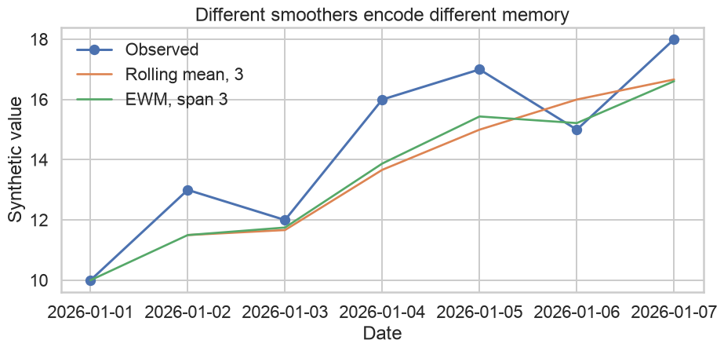
Match the task to the concept:
Europe/Dublin to naive local timestamps;The pandas toolkit establishes:
Only then can time plots, seasonal plots, lag plots, and ACF plots be interpreted reliably.
Synthetic electricity-market data for teaching
Which visualizations reveal the temporal structures?
Time order → pattern → seasonality → relationships → dependence → diagnostic judgment
By the end of the lesson, students will be able to:
SET UP TIME
↓
PLOT THE SERIES
↓
IDENTIFY PATTERNS
↓
EXPOSE SEASONALITY
↓
COMPARE VARIABLES
↓
MEASURE SERIAL DEPENDENCE
↓
FORM FORECASTING HYPOTHESESA time-series graph can reveal:
hours = pd.date_range("2026-01-01", periods=24 * 90, freq="h")
t = np.arange(len(hours))
hour = hours.hour.to_numpy()
dow = hours.dayofweek.to_numpy()
day = np.arange(len(hours)) / 24
temperature = 17 + 7 * np.sin(2 * np.pi * (hour - 14) / 24) + 3 * np.sin(2 * np.pi * day / 45)
weekend = dow >= 5
daily_cycle = 9 * np.sin(2 * np.pi * (hour - 7) / 24) + 4 * np.sin(4 * np.pi * (hour - 7) / 24)
weekly_effect = np.where(weekend, -8, 0)
trend = 0.025 * day
noise = rng.normal(0, 2.2, len(hours))
demand = 72 + trend + daily_cycle + weekly_effect + 0.35 * (temperature - 17) ** 2 + noise
ts = pd.DataFrame({
"timestamp": hours,
"demand_mw": demand,
"temperature_c": temperature,
"is_weekend": weekend
})
ts.loc[450, "demand_mw"] += 28
ts.head(3 )| timestamp | demand_mw | temperature_c | is_weekend | |
|---|---|---|---|---|
| 0 | 2026-01-01 00:00:00 | 70.264545 | 20.500000 | False |
| 1 | 2026-01-01 01:00:00 | 61.884150 | 18.829187 | False |
| 2 | 2026-01-01 02:00:00 | 62.960170 | 17.034906 | False |
timestamp.demand_mw.temperature_c.is_weekend.print(ts.shape)
print(ts.dtypes)
print("unique timestamps:", ts["timestamp"].is_unique)
print("monotonic time:", ts["timestamp"].is_monotonic_increasing)(2160, 4)
timestamp datetime64[us]
demand_mw float64
temperature_c float64
is_weekend bool
dtype: object
unique timestamps: True
monotonic time: Truets_indexed = ts.set_index("timestamp")
print(ts_indexed.index)
print(ts_indexed.columns)
ts_indexed.head(3)DatetimeIndex(['2026-01-01 00:00:00', '2026-01-01 01:00:00', '2026-01-01 02:00:00', '2026-01-01 03:00:00',
'2026-01-01 04:00:00', '2026-01-01 05:00:00', '2026-01-01 06:00:00', '2026-01-01 07:00:00',
'2026-01-01 08:00:00', '2026-01-01 09:00:00',
...
'2026-03-31 14:00:00', '2026-03-31 15:00:00', '2026-03-31 16:00:00', '2026-03-31 17:00:00',
'2026-03-31 18:00:00', '2026-03-31 19:00:00', '2026-03-31 20:00:00', '2026-03-31 21:00:00',
'2026-03-31 22:00:00', '2026-03-31 23:00:00'],
dtype='datetime64[us]', name='timestamp', length=2160, freq=None)
Index(['demand_mw', 'temperature_c', 'is_weekend'], dtype='str')| demand_mw | temperature_c | is_weekend | |
|---|---|---|---|
| timestamp | |||
| 2026-01-01 00:00:00 | 70.264545 | 20.500000 | False |
| 2026-01-01 01:00:00 | 61.884150 | 18.829187 | False |
| 2026-01-01 02:00:00 | 62.960170 | 17.034906 | False |
A time index makes ordering, slicing, resampling, and lag construction explicit.
Timestamp: an instant in time.Period: a span associated with a frequency.print("inferred frequency:", pd.infer_freq(ts_indexed.index))
print("expected observations:", len(pd.date_range(
ts_indexed.index.min(), ts_indexed.index.max(), freq="h"
)))inferred frequency: h
expected observations: 2160A regular frequency defines what “lag 1,” “season,” and “consecutive” mean.
broken = pd.concat([ts.iloc[:100], ts.iloc[101:110], ts.iloc[[105]]], ignore_index=True)
print("duplicate timestamps:", broken["timestamp"].duplicated().sum())
expected = pd.date_range(broken["timestamp"].min(), broken["timestamp"].max(), freq="h")
missing_timestamps = expected.difference(pd.DatetimeIndex(broken["timestamp"]))
print("missing timestamps:", missing_timestamps.tolist())duplicate timestamps: 1
missing timestamps: [Timestamp('2026-01-05 04:00:00')]regular = (
broken.set_index("timestamp")
.loc[lambda d: ~d.index.duplicated(keep="first")]
.reindex(expected)
)
regular.loc[regular["demand_mw"].isna()].head()| demand_mw | temperature_c | is_weekend | |
|---|---|---|---|
| 2026-01-05 04:00:00 | NaN | NaN | NaN |
Reindexing makes missing periods explicit; it does not justify interpolation.
Which problems can invalidate a time plot or a lag plot?
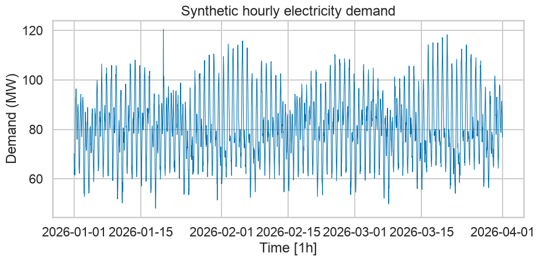
Consecutive observations are connected to emphasize temporal order.
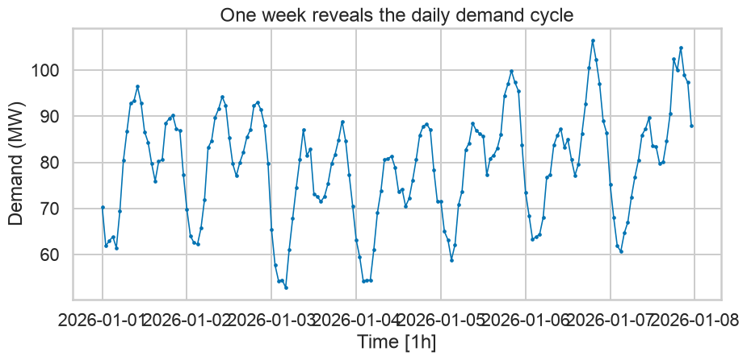
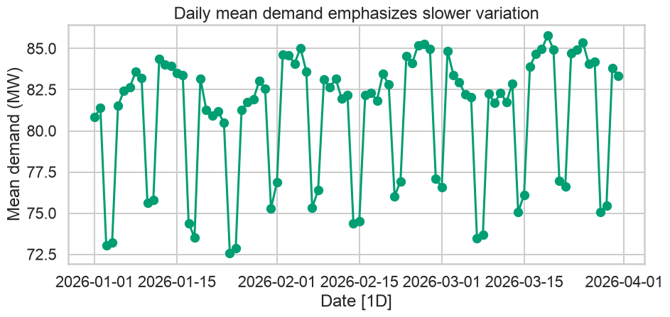
daily_summary = ts.set_index("timestamp")["demand_mw"].resample("D").agg(
daily_mean="mean", daily_max="max", daily_min="min"
)
daily_summary.head()| daily_mean | daily_max | daily_min | |
|---|---|---|---|
| timestamp | |||
| 2026-01-01 | 80.823222 | 96.441986 | 61.466107 |
| 2026-01-02 | 81.393973 | 94.236912 | 62.204513 |
| 2026-01-03 | 73.043436 | 88.911742 | 52.861777 |
| 2026-01-04 | 73.230841 | 88.302284 | 54.245727 |
| 2026-01-05 | 81.513606 | 99.867377 | 58.863807 |
fig, ax = plt.subplots()
ax.plot(daily_summary.index, daily_summary["daily_mean"], label="Mean")
ax.plot(daily_summary.index, daily_summary["daily_max"], label="Maximum")
ax.plot(daily_summary.index, daily_summary["daily_min"], label="Minimum")
ax.set(title="Mean, maximum, and minimum answer different questions",
xlabel="Date [1D]", ylabel="Demand (MW)")
ax.legend(frameon=False)
plt.tight_layout()
plt.show()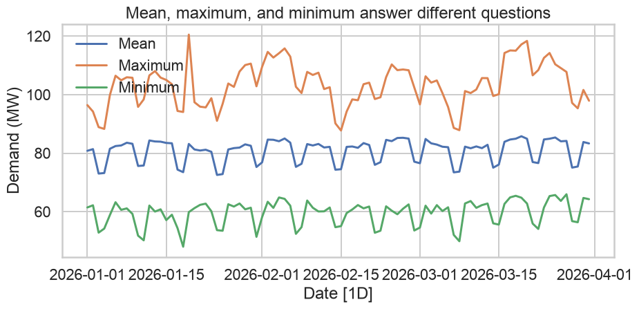
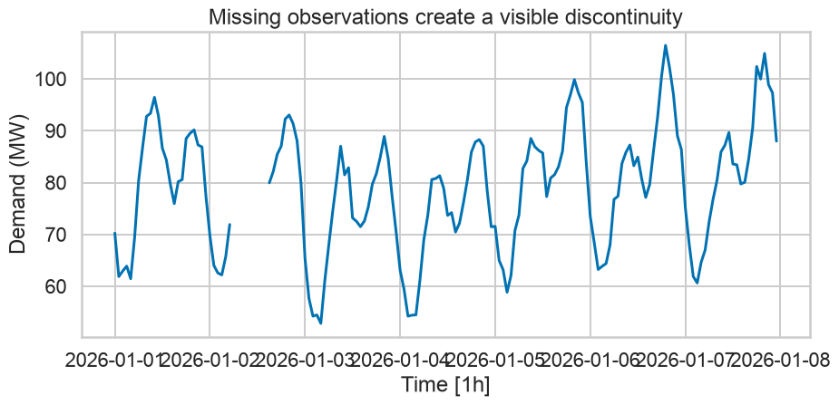
median = ts["demand_mw"].median()
mad = (ts["demand_mw"] - median).abs().median()
ts["robust_score"] = 0.6745 * (ts["demand_mw"] - median) / mad
flagged = ts.loc[ts["robust_score"].abs().gt(4)]
flagged.loc[:, ["timestamp", "demand_mw", "robust_score"]].head()| timestamp | demand_mw | robust_score |
|---|
fig, ax = plt.subplots()
ax.plot(ts["timestamp"], ts["demand_mw"], linewidth=0.8, color="0.5")
ax.scatter(flagged["timestamp"], flagged["demand_mw"], color="#D55E00", label="Flagged")
ax.set(title="Statistical flags guide investigation",
xlabel="Time [1h]", ylabel="Demand (MW)")
ax.legend(frameon=False)
plt.tight_layout()
plt.show()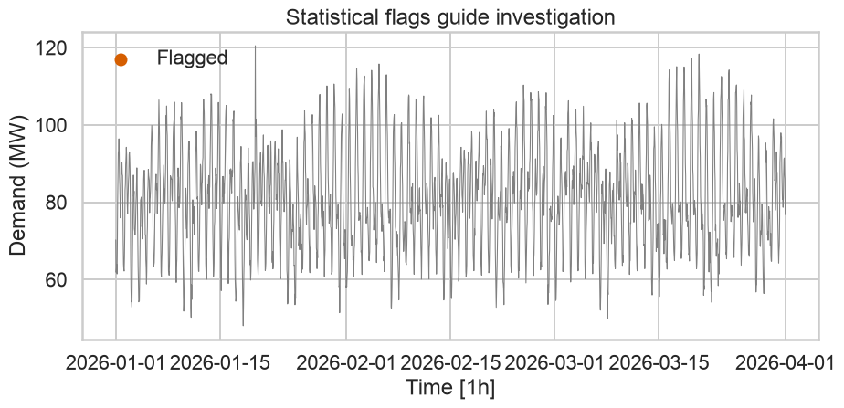
| Pattern | Working definition |
|---|---|
| Trend | long-term increase or decrease; not necessarily linear |
| Seasonality | repeating pattern with a fixed, known period |
| Cycle | rise and fall without a fixed, known frequency |
| Irregular | remaining variation not explained by visible structure |
fig, ax = plt.subplots()
ax.plot(trend_series.index, trend_series, color="#0072B2", alpha=0.7)
ax.plot(trend_series.rolling(30, center=True).mean(), color="#D55E00", linewidth=2)
ax.set(title="A smoother can reveal long-term direction",
xlabel="Date", ylabel="Synthetic value")
plt.tight_layout()
plt.show()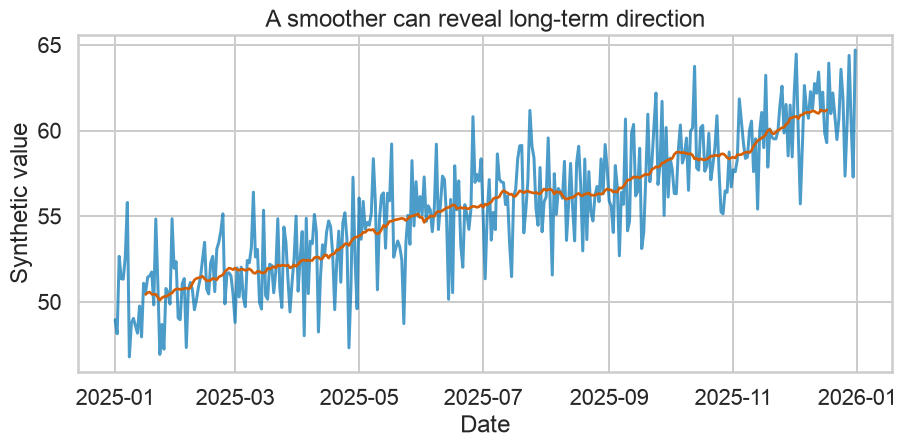
Hourly data may contain several seasonal periods:
A series can contain more than one seasonal pattern.
A cycle:
fig, axes = plt.subplots(1, 2)
axes[0].plot(level, multiplicative, color="#0072B2")
axes[0].set(title="Original scale", xlabel="Time", ylabel="Value")
axes[1].plot(level, np.log(multiplicative), color="#009E73")
axes[1].set(title="Log scale", xlabel="Time", ylabel="log(Value)")
plt.tight_layout()
plt.show()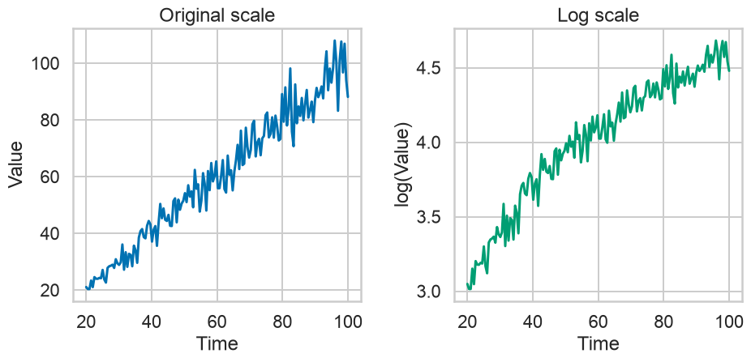
For each description, choose trend, seasonality, cycle, irregular variation, or insufficient evidence:
seasonal = ts.assign(
date=ts["timestamp"].dt.date,
hour=ts["timestamp"].dt.hour,
day_name=ts["timestamp"].dt.day_name(),
day_of_week=ts["timestamp"].dt.dayofweek,
week=ts["timestamp"].dt.isocalendar().week.astype(int)
)
seasonal.head(3)| timestamp | demand_mw | temperature_c | is_weekend | robust_score | date | hour | day_name | day_of_week | week | |
|---|---|---|---|---|---|---|---|---|---|---|
| 0 | 2026-01-01 00:00:00 | 70.264545 | 20.500000 | False | -0.736755 | 2026-01-01 | 0 | Thursday | 3 | 1 |
| 1 | 2026-01-01 01:00:00 | 61.884150 | 18.829187 | False | -1.357132 | 2026-01-01 | 1 | Thursday | 3 | 1 |
| 2 | 2026-01-01 02:00:00 | 62.960170 | 17.034906 | False | -1.277478 | 2026-01-01 | 2 | Thursday | 3 | 1 |
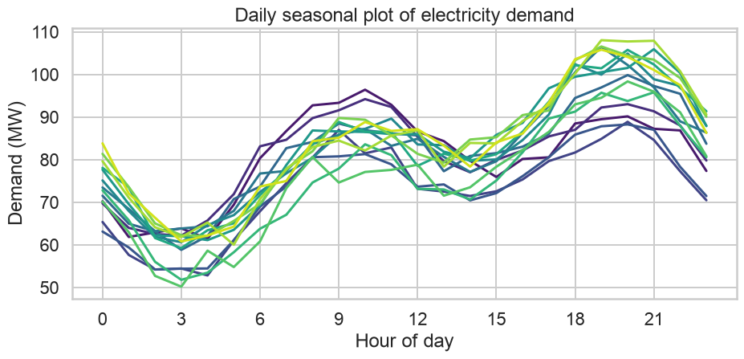
With many seasonal lines:
fig, ax = plt.subplots()
ax.plot(hourly_profile["hour_of_week"], hourly_profile["mean_demand"], color="#0072B2")
ax.set(title="Average weekly demand profile",
xlabel="Hour of week", ylabel="Mean demand (MW)")
ax.set_xticks(np.arange(12, 168, 24), ["Mon", "Tue", "Wed", "Thu", "Fri", "Sat", "Sun"])
plt.tight_layout()
plt.show()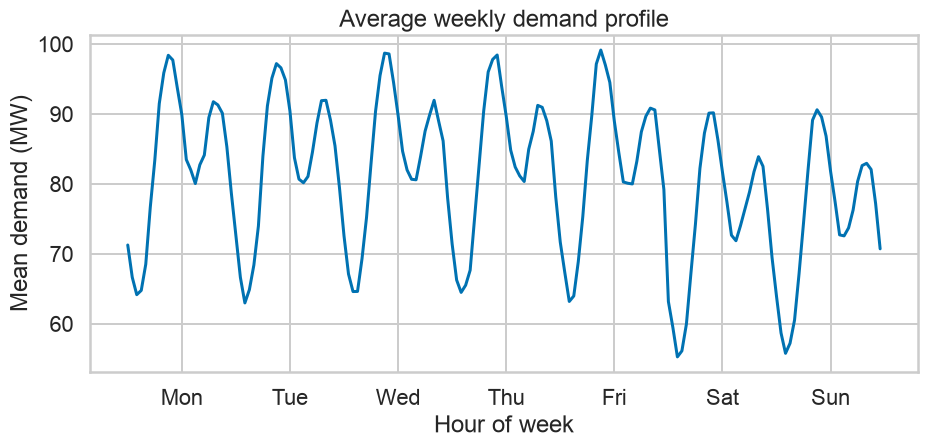
A seasonal-subseries plot:
fig, axes = plt.subplots(1, 4, sharey=True)
for ax, (hour_value, group) in zip(axes, subseries.groupby("hour")):
ax.plot(group["day_index"], group["demand_mw"], color="0.3", linewidth=0.8)
ax.axhline(group["demand_mw"].mean(), color="#0072B2", linewidth=2)
ax.set(title=f"{hour_value:02d}:00", xlabel="Day")
axes[0].set_ylabel("Demand (MW)")
fig.suptitle("Seasonal subseries at selected hours", y=1.03)
plt.tight_layout()
plt.show()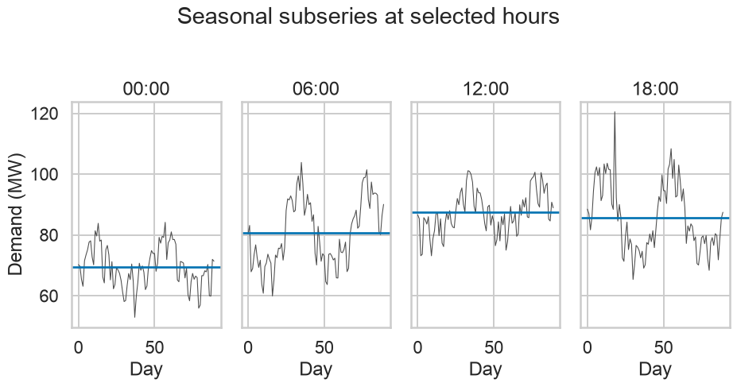
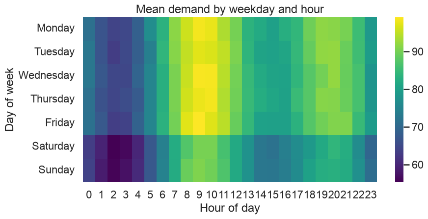
Choose between a time plot, seasonal plot, subseries plot, and heatmap:
A target series may be accompanied by predictors such as:
A graph can reveal association, nonlinearity, changing relationships, and subgroup structure.
fig, axes = plt.subplots(2, 1, sharex=True)
axes[0].plot(relationship_week["timestamp"], relationship_week["demand_mw"], color="#0072B2")
axes[0].set(ylabel="Demand (MW)", title="Demand and temperature over the same week")
axes[1].plot(relationship_week["timestamp"], relationship_week["temperature_c"], color="#D55E00")
axes[1].set(xlabel="Time [1h]", ylabel="Temperature (°C)")
plt.tight_layout()
plt.show()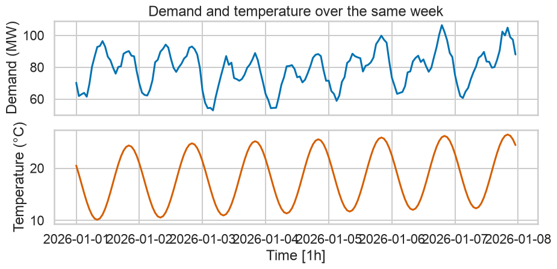
Two vertical axes allow arbitrary rescaling. Apparent alignment can change when either axis limit changes.
Prefer:
fig, ax = plt.subplots()
sns.scatterplot(data=ts, x="temperature_c", y="demand_mw",
hue="is_weekend", alpha=0.55, palette="colorblind", ax=ax)
ax.set(title="Demand and temperature show a nonlinear relationship",
xlabel="Temperature (°C)", ylabel="Demand (MW)")
ax.legend(title="Weekend", frameon=False)
plt.tight_layout()
plt.show()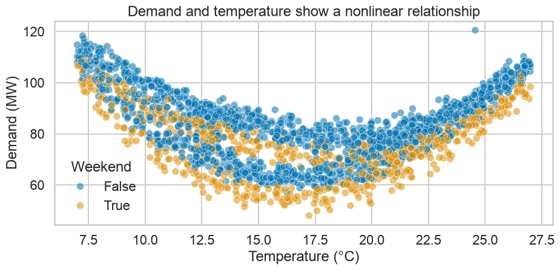
linear correlation: -0.115A low linear correlation does not imply absence of a relationship.
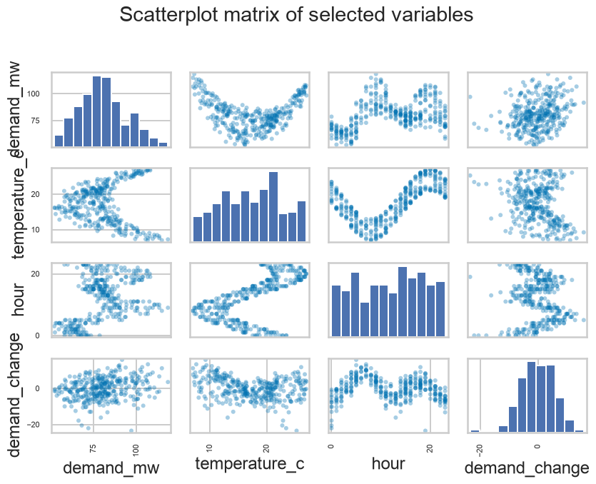
ts["month"] = ts["timestamp"].dt.month
monthly_corr = ts.groupby("month").apply(
lambda g: g["temperature_c"].corr(g["demand_mw"]), include_groups=False
)
monthly_corrmonth
1 0.135968
2 -0.090175
3 -0.365253
dtype: float64Relationships may vary across time, season, or regime.
For lag k:
y_t;y_{t-k};lagged = ts.sort_values("timestamp").assign(
lag_1=lambda d: d["demand_mw"].shift(1),
lag_24=lambda d: d["demand_mw"].shift(24),
lag_168=lambda d: d["demand_mw"].shift(24 * 7)
)
lagged.loc[:, ["timestamp", "demand_mw", "lag_1", "lag_24", "lag_168"]].head()| timestamp | demand_mw | lag_1 | lag_24 | lag_168 | |
|---|---|---|---|---|---|
| 0 | 2026-01-01 00:00:00 | 70.264545 | NaN | NaN | NaN |
| 1 | 2026-01-01 01:00:00 | 61.884150 | 70.264545 | NaN | NaN |
| 2 | 2026-01-01 02:00:00 | 62.960170 | 61.884150 | NaN | NaN |
| 3 | 2026-01-01 03:00:00 | 63.897429 | 62.960170 | NaN | NaN |
| 4 | 2026-01-01 04:00:00 | 61.466107 | 63.897429 | NaN | NaN |
fig, ax = plt.subplots()
sns.scatterplot(data=lagged, x="lag_1", y="demand_mw", alpha=0.35, s=24, ax=ax)
lims = [ts["demand_mw"].min(), ts["demand_mw"].max()]
ax.plot(lims, lims, linestyle="--", color="0.5")
ax.set(title="Lag 1: adjacent hours", xlabel="Demand at t − 1 (MW)", ylabel="Demand at t (MW)")
plt.tight_layout()
plt.show()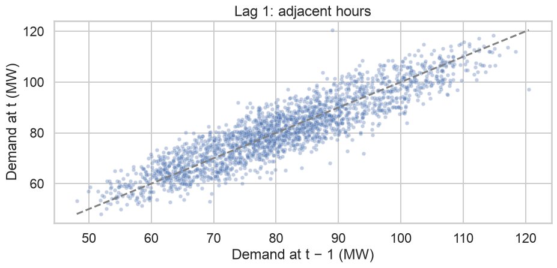
lags = [1, 6, 12, 24, 48, 168]
fig, axes = plt.subplots(2, 3, sharex=True, sharey=True)
for ax, k in zip(axes.flat, lags):
frame = pd.DataFrame({"current": ts["demand_mw"], "lagged": ts["demand_mw"].shift(k)})
ax.scatter(frame["lagged"], frame["current"], alpha=0.25, s=12, color="#0072B2")
ax.set(title=f"lag {k}", xlabel="", ylabel="")
fig.supxlabel("Lagged demand (MW)")
fig.supylabel("Current demand (MW)")
fig.suptitle("Lag plots reveal dependence at different horizons", y=1.02)
plt.tight_layout()
plt.show()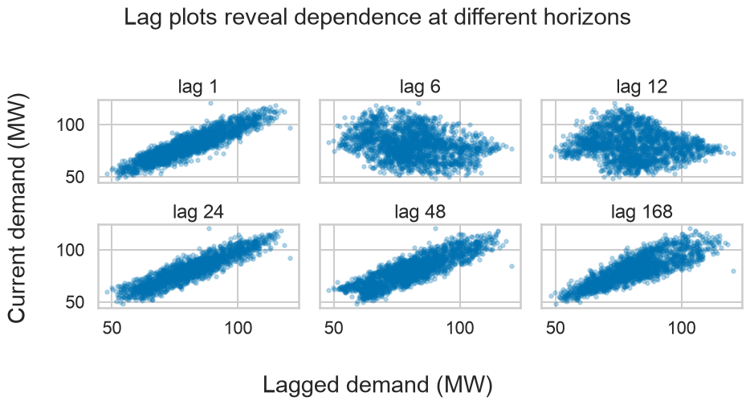
fig, ax = plt.subplots()
sns.scatterplot(data=lag_24_plot, x="lag_24", y="demand_mw",
hue="hour", palette="viridis", alpha=0.55, s=28, ax=ax)
ax.set(title="Lag 24 colored by hour of day",
xlabel="Demand one day earlier (MW)", ylabel="Current demand (MW)")
ax.legend(title="Hour", bbox_to_anchor=(1.02, 1), frameon=False, ncol=2)
plt.tight_layout()
plt.show()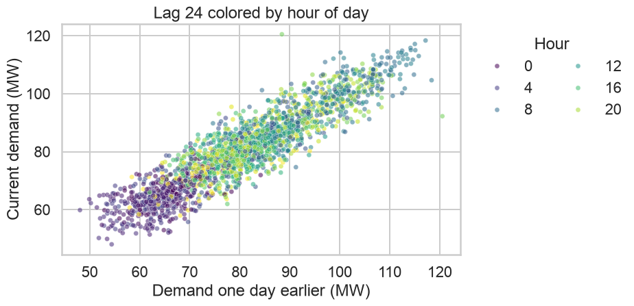
What would you expect for:
Autocorrelation at lag k measures linear association between y_t and y_{t-k}.
r_k =
\frac{\sum_{t=k+1}^{T}(y_t-\bar{y})(y_{t-k}-\bar{y})}
{\sum_{t=1}^{T}(y_t-\bar{y})^2}The collection of coefficients is the autocorrelation function, or ACF.
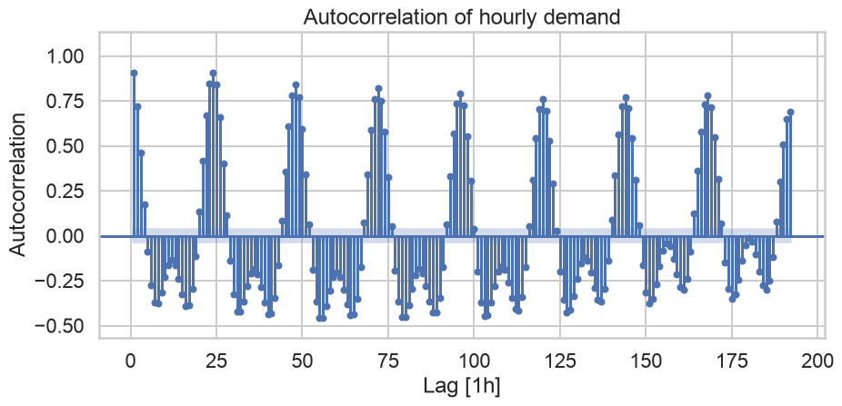
fig, axes = plt.subplots(2, 1)
plot_acf(daily_means, lags=30, zero=False, bartlett_confint=False, ax=axes[0])
axes[0].set(title="ACF of daily mean demand", xlabel="Lag [1D]")
plot_acf(daily_diff, lags=30, zero=False, bartlett_confint=False, ax=axes[1])
axes[1].set(title="ACF after first differencing", xlabel="Lag [1D]")
plt.tight_layout()
plt.show()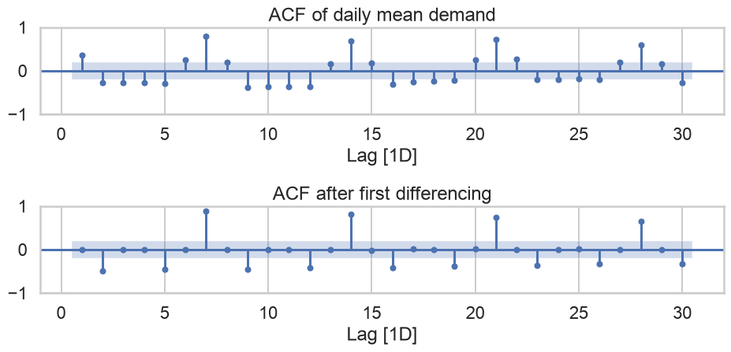
Hourly demand can simultaneously contain:
One ACF plot compresses these mechanisms, so combine it with time, seasonal, and covariate plots.
A white-noise series has:
White noise is a benchmark for “no remaining temporal signal.”
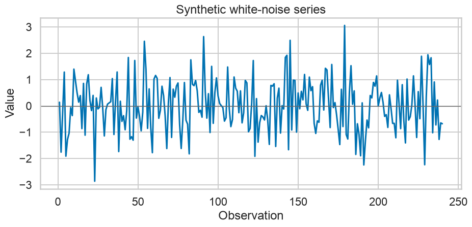
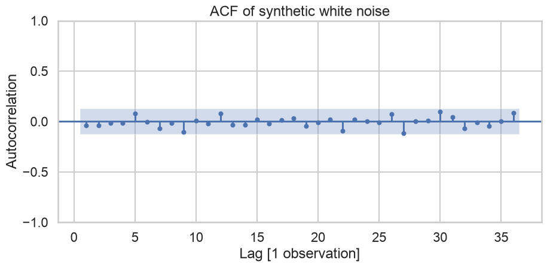
For a white-noise series of length T, a common approximate reference is:
\pm \frac{1.96}{\sqrt{T}}These are approximate pointwise bounds, not a guarantee that every spike lies inside them.
fig, axes = plt.subplots(2, 1)
plot_acf(ts["demand_mw"], lags=48, zero=False, bartlett_confint=False, ax=axes[0])
axes[0].set(title="Structured demand series", xlabel="Lag [1h]")
plot_acf(white_noise, lags=48, zero=False, bartlett_confint=False, ax=axes[1])
axes[1].set(title="White-noise benchmark", xlabel="Lag [1 observation]")
plt.tight_layout()
plt.show()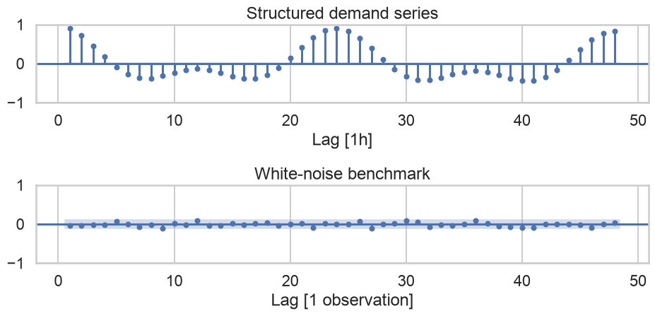
Which statement is defensible?
visual_evidence = pd.DataFrame({
"evidence": [
"Hourly persistence", "Daily seasonality", "Weekly seasonality",
"Temperature relationship", "Unusual observation"
],
"visual": [
"Lag-1 plot and ACF", "Seasonal plot and lag 24",
"Weekly profile and lag 168", "Scatterplot by weekend",
"Full time plot with statistical flag"
],
"forecasting_implication": [
"Represent short-run dependence", "Represent hour-of-day structure",
"Represent day-of-week structure", "Consider nonlinear covariate effects",
"Investigate event and robust loss"
]
})
visual_evidence| evidence | visual | forecasting_implication | |
|---|---|---|---|
| 0 | Hourly persistence | Lag-1 plot and ACF | Represent short-run dependence |
| 1 | Daily seasonality | Seasonal plot and lag 24 | Represent hour-of-day structure |
| 2 | Weekly seasonality | Weekly profile and lag 168 | Represent day-of-week structure |
| 3 | Temperature relationship | Scatterplot by weekend | Consider nonlinear covariate effects |
| 4 | Unusual observation | Full time plot with statistical flag | Investigate event and robust loss |
fig, axes = plt.subplots(2, 2)
axes[0, 0].plot(week_view["timestamp"], week_view["demand_mw"], color="#0072B2")
axes[0, 0].set(title="Time plot", ylabel="Demand (MW)")
sns.scatterplot(data=ts.sample(500, random_state=42), x="temperature_c", y="demand_mw",
hue="is_weekend", alpha=0.45, legend=False, ax=axes[0, 1])
axes[0, 1].set(title="Covariate relationship", xlabel="Temperature (°C)", ylabel="Demand (MW)")
axes[1, 0].plot(hourly_profile["hour_of_week"], hourly_profile["mean_demand"], color="#009E73")
axes[1, 0].set(title="Weekly seasonal profile", xlabel="Hour of week", ylabel="Mean demand (MW)")
plot_acf(ts["demand_mw"], lags=48, zero=False, bartlett_confint=False, ax=axes[1, 1])
axes[1, 1].set(title="ACF", xlabel="Lag [1h]")
plt.tight_layout()
plt.show()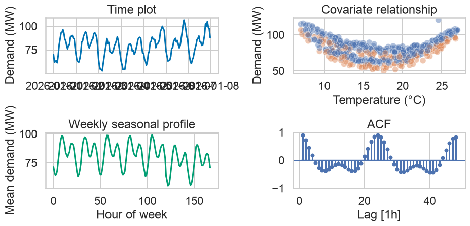
The graphics do not by themselves prove:
Using ts, produce a visual diagnostic report that:
# 1. Validate temporal structure
# 2. Build calendar features
# 3. Plot chronology at two scales
# 4. Plot seasonal structure
# 5. Plot target-covariate relationship
# 6. Construct lagged values
# 7. Plot ACF
# 8. Record evidence, implications, and limitationsA good report explains why each chart is present.
| Dimension | Evidence |
|---|---|
| Time structure | order, uniqueness, frequency, and gaps checked |
| Visual choice | each chart matches a diagnostic question |
| Temporal reasoning | trend, seasonality, cycles, and lags distinguished |
| Statistical care | association, ACF, and bounds interpreted cautiously |
| Communication | titles, axes, units, and encodings are explicit |
| Forecast connection | visual evidence becomes a testable modeling hypothesis |
| Reproducibility | code executes without external downloads |
Attribution: concepts were adapted and rewritten from the cited references. Synthetic data, exercises, validation rules, and teaching narrative were created for this module.
Data Analytics & Visualization